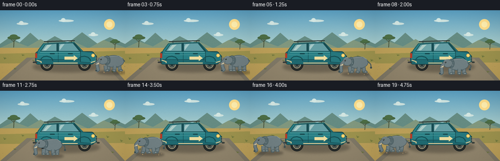
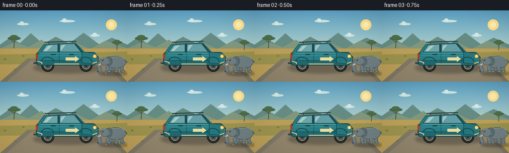

CODING AGENTS AS PIXEL WORLD MODELS
traex/GPT-5.6-Sol · dynamic_spatial_relationship_0068
点击播放 · 原生 RGB 像素
逐轮保存的候选
回放视频、检查图与代码变化。
每份候选均可单独播放。实际图片检查记录在下方工具轨迹中。
候选 01播放与检查图
点击播放 · 原生 RGB 像素


展开代码变化
--- 上一保存版本
+++ 本次保存版本
@@ -0,0 +1,252 @@
+from pathlib import Path
+import math
+import numpy as np
+from PIL import Image, ImageDraw, ImageFilter
+import artifact_io
+
+W, H, N = 256, 144, 20
+S = 4
+rng = np.random.default_rng(17)
+
+def sc(v): return int(round(v*S))
+def pts(seq): return [(sc(x), sc(y)) for x,y in seq]
+
+def ellipse(d, box, fill, outline=None, width=1):
+ d.ellipse(tuple(sc(x) for x in box), fill=fill, outline=outline, width=sc(width) if outline else 1)
+def polygon(d, xy, fill, outline=None):
+ d.polygon(pts(xy), fill=fill)
+ if outline: d.line(pts(xy+[xy[0]]), fill=outline, width=sc(1), joint='curve')
+def line(d, xy, fill, width=1, joint='curve'):
+ d.line(pts(xy), fill=fill, width=sc(width), joint=joint)
+def rounded(d, box, r, fill, outline=None, width=1):
+ d.rounded_rectangle(tuple(sc(x) for x in box), radius=sc(r), fill=fill,
+ outline=outline, width=sc(width) if outline else 1)
+
+def background(frame):
+ h, w = H*S, W*S
+ y = np.arange(h)[:,None]
+ # warm, gently graded morning sky
+ stops = [(0,(89,157,191)),(.52,(173,207,204)),(.78,(244,210,144)),(1,(246,183,104))]
+ arr = np.zeros((h,w,3), dtype=np.uint8)
+ for yy in range(h):
+ u = yy/(h-1)
+ for j in range(len(stops)-1):
+ if stops[j][0] <= u <= stops[j+1][0]:
+ a,c0=stops[j]; b,c1=stops[j+1]
+ q=(u-a)/(b-a)
+ col=[int(c0[k]*(1-q)+c1[k]*q) for k in range(3)]
+ break
+ arr[yy,:, :] = col
+ im=Image.fromarray(arr,'RGB')
+ d=ImageDraw.Draw(im)
+ # sun and translucent halo
+ ellipse(d,(213,18,235,40),(255,222,139))
+ ellipse(d,(218,23,230,35),(255,239,176))
+ # far clouds drift almost imperceptibly
+ drift=frame*.18
+ for x,y,ww in [(34+drift,25,24),(120+drift*.6,19,31),(181+drift*.3,48,20)]:
+ ellipse(d,(x,y,x+ww,y+5),(203,224,220))
+ ellipse(d,(x+5,y-3,x+14,y+5),(211,230,226))
+ # distant hills
+ polygon(d,[(0,69),(20,55),(40,66),(62,46),(87,68),(112,53),(139,67),(168,45),(199,68),(225,55),(256,69),(256,102),(0,102)],(101,139,130))
+ polygon(d,[(0,77),(29,64),(57,74),(83,59),(112,76),(147,62),(181,78),(212,61),(256,76),(256,105),(0,105)],(128,151,126))
+ # golden savanna ground
+ polygon(d,[(0,77),(256,77),(256,144),(0,144)],(186,158,88))
+ # background grass bands
+ polygon(d,[(0,89),(256,83),(256,107),(0,109)],(155,145,77))
+ # road, gives scene depth and anchored feet
+ polygon(d,[(55,97),(213,97),(256,144),(0,144)],(126,119,101))
+ polygon(d,[(66,99),(203,99),(245,144),(13,144)],(143,131,107))
+ # soft road texture
+ for i in range(75):
+ xx=float(rng.integers(4,252)); yy=float(rng.integers(102,143))
+ col=(132,121,99) if i%2 else (153,140,113)
+ ellipse(d,(xx,yy,xx+0.7,yy+0.45),col)
+ # acacia silhouettes
+ draw_acacia(d, 28, 76, .8)
+ draw_acacia(d, 235, 80, .63)
+ # grass tufts, some subtle frame sway
+ sway=math.sin(frame*.35)*.6
+ for x0,y0,sz in [(9,100,4),(46,93,3),(220,96,4),(248,104,4),(30,121,3),(230,127,3),(67,103,2)]:
+ c=(103,113,58)
+ line(d,[(x0,y0),(x0-1+sway,y0-sz)],c,1)
+ line(d,[(x0,y0),(x0+2+sway,y0-sz*.8)],c,1)
+ line(d,[(x0,y0),(x0+4+sway,y0-sz*.5)],c,1)
+ return im
+
+def draw_acacia(d,x,y,z):
+ trunk=(73,82,58)
+ line(d,[(x,y),(x+1,y-22*z)],trunk,max(1,2*z))
+ line(d,[(x+1,y-13*z),(x-7*z,y-20*z)],trunk,1)
+ line(d,[(x+1,y-16*z),(x+9*z,y-23*z)],trunk,1)
+ ellipse(d,(x-16*z,y-29*z,x+17*z,y-20*z),(72,103,67))
+ ellipse(d,(x-10*z,y-33*z,x+10*z,y-23*z),(77,110,69))
+
+def car_layer(im):
+ d=ImageDraw.Draw(im)
+ # broad soft contact shadow
+ sh=Image.new('RGBA',im.size,(0,0,0,0)); sd=ImageDraw.Draw(sh)
+ ellipse(sd,(67,105,204,127),(42,38,32,90))
+ sh=sh.filter(ImageFilter.GaussianBlur(sc(3)))
+ im.paste(sh,(0,0),sh)
+ d=ImageDraw.Draw(im)
+ # far wheels
+ for cx in (96,173):
+ ellipse(d,(cx-13,98,cx+13,124),(38,43,42),(24,28,28),1)
+ ellipse(d,(cx-8,103,cx+8,119),(86,92,86),(198,186,143),1)
+ ellipse(d,(cx-3,108,cx+3,114),(34,52,52))
+ for ang in range(0,360,60):
+ a=math.radians(ang)
+ line(d,[(cx+3*math.cos(a),111+3*math.sin(a)),(cx+7*math.cos(a),111+7*math.sin(a))],(54,67,65),1)
+ # lower chassis and body, station wagon faces RIGHT
+ rounded(d,(72,84,193,111),6,(31,104,111),(20,62,68),1)
+ polygon(d,[(78,82),(89,68),(151,65),(170,84),(190,87),(193,101),(73,101)],(40,126,132),(23,76,82))
+ # roof rack emphasizes long rear/front silhouette
+ line(d,[(90,64),(153,62)],(44,51,47),2)
+ line(d,[(98,63),(98,68)],(44,51,47),1)
+ line(d,[(146,62),(146,66)],(44,51,47),1)
+ # windows
+ polygon(d,[(93,70),(116,68),(116,84),(83,84)],(109,165,168),(20,67,73))
+ polygon(d,[(120,68),(149,67),(163,84),(120,84)],(100,158,164),(20,67,73))
+ # window shine
+ polygon(d,[(97,71),(106,70),(94,82),(88,82)],(172,203,197))
+ polygon(d,[(124,70),(132,69),(122,82),(122,75)],(164,199,198))
+ # pillars
+ line(d,[(118,67),(118,85)],(22,78,84),3)
+ line(d,[(151,67),(166,85)],(22,78,84),3)
+ # doors and panel highlights
+ line(d,[(119,86),(119,107)],(21,79,84),1)
+ line(d,[(165,85),(164,105)],(21,79,84),1)
+ line(d,[(79,91),(188,91)],(71,149,150),1)
+ rounded(d,(139,88,149,90),1,(22,69,74))
+ rounded(d,(102,88,112,90),1,(22,69,74))
+ # front hood, grille and bumper at RIGHT
+ polygon(d,[(165,84),(190,86),(198,94),(198,105),(191,108),(165,106)],(38,119,125),(20,67,72))
+ line(d,[(197,94),(197,104)],(31,48,48),2)
+ for yy in (96,99,102): line(d,[(195,yy),(199,yy)],(135,147,132),1)
+ rounded(d,(198,105,204,108),2,(54,60,56))
+ ellipse(d,(187,89,194,96),(255,220,119),(243,174,75),1)
+ # rear bumper and tail lamp on LEFT
+ rounded(d,(67,105,76,108),2,(55,60,57))
+ rounded(d,(72,88,76,98),1,(178,58,39))
+ # wheel arch overlays create integrated fenders
+ for cx in (96,173):
+ line(d,[(cx-13,102),(cx-11,98),(cx-7,95),(cx,94),(cx+7,96),(cx+11,100),(cx+12,104)],(21,77,82),2)
+ # cream lower trim
+ line(d,[(75,102),(84,105),(84,108)],(214,197,145),2)
+ line(d,[(109,108),(159,108)],(214,197,145),2)
+ line(d,[(186,107),(195,104)],(214,197,145),2)
+ # highly legible forward-pointing door decal
+ polygon(d,[(132,95),(151,95),(151,92),(159,98),(151,104),(151,101),(132,101)],(236,220,158))
+ # tiny highlights
+ line(d,[(82,86),(163,86)],(100,169,167),1)
+ return im
+
+def elephant_layer(im,cx,ground,phase,bob=0):
+ d=ImageDraw.Draw(im)
+ # shadow follows the animal
+ sh=Image.new('RGBA',im.size,(0,0,0,0)); sd=ImageDraw.Draw(sh)
+ ellipse(sd,(cx-31,ground-2,cx+27,ground+7),(37,34,31,100))
+ sh=sh.filter(ImageFilter.GaussianBlur(sc(2.2)))
+ im.paste(sh,(0,0),sh); d=ImageDraw.Draw(im)
+ y=ground-10-bob
+ skin=(111,126,129); dark=(73,91,95); deep=(62,78,81); light=(143,154,153)
+ # articulated walk: opposite legs swing in pairs
+ swing=math.sin(phase)*5.2
+ swing2=math.sin(phase+math.pi)*5.2
+ # rear legs first, descending from body
+ draw_leg(d,cx+14,y-2,ground,swing2,skin,dark,False)
+ draw_leg(d,cx-8,y-1,ground,swing,skin,dark,False)
+ # body
+ ellipse(d,(cx-18,y-23,cx+24,y+2),skin,dark,1)
+ # back highlight
+ line(d,[(cx-12,y-20),(cx+13,y-22),(cx+21,y-17)],light,1)
+ # belly contour
+ line(d,[(cx-6,y+1),(cx+13,y+2)],dark,1)
+ # tail on the right/rear
+ tailwave=math.sin(phase*.55)*2
+ line(d,[(cx+22,y-14),(cx+29,y-7),(cx+28+tailwave,y-1)],dark,2)
+ ellipse(d,(cx+26+tailwave,y-2,cx+30+tailwave,y+2),deep)
+ # near ear behind head, subtly flaps
+ earw=1.2*math.sin(phase+.8)
+ ellipse(d,(cx-18-earw,y-22,cx-4+earw,y-3),(94,112,116),dark,1)
+ line(d,[(cx-14,y-18),(cx-8,y-8)],(128,142,144),1)
+ # head left-facing
+ ellipse(d,(cx-29,y-21,cx-9,y-4),skin,dark,1)
+ # forehead highlight
+ line(d,[(cx-26,y-18),(cx-19,y-21),(cx-13,y-18)],light,1)
+ # front legs laid over body
+ draw_leg(d,cx+5,y,ground,swing,skin,dark,True)
+ draw_leg(d,cx-14,y-1,ground,swing2,skin,dark,True)
+ # trunk: curved polyline, hangs and swings toward left
+ ts=math.sin(phase+.5)*2.4
+ trunk=[(cx-27,y-12),(cx-31,y-7),(cx-31+ts*.3,y),(cx-29+ts,y+7),(cx-33+ts,y+9)]
+ line(d,trunk,dark,7)
+ line(d,trunk,skin,5)
+ # small trunk tip nostril
+ ellipse(d,(cx-35+ts,y+7,cx-31+ts,y+10),deep)
+ # tusk and eye
+ polygon(d,[(cx-27,y-8),(cx-34,y-4),(cx-28,y-5)],(244,231,190),(180,168,139))
+ ellipse(d,(cx-25,y-16,cx-22,y-13),(25,31,31))
+ ellipse(d,(cx-24.3,y-15.4,cx-23.3,y-14.4),(231,231,210))
+ # ear rim
+ line(d,[(cx-17,y-20),(cx-6,y-16),(cx-7,y-7),(cx-14,y-5)],(72,91,95),1)
+ # little dust motes only while walking
+ speed=abs(math.sin(phase))
+ if speed>.25:
+ for dx,dy,r in [(-17,2,1),(16,3,.7),(22,1,.5)]:
+ ellipse(d,(cx+dx-r,ground+dy-r,cx+dx+r,ground+dy+r),(178,153,107))
+
+def draw_leg(d,x,y,ground,swing,skin,dark,front):
+ # upper leg and forward/back lower segment, with rounded lines
+ knee_x=x+swing*.35
+ knee_y=y+8
+ foot_x=x+swing
+ line(d,[(x,y-1),(knee_x,knee_y),(foot_x,ground-2)],dark,8)
+ line(d,[(x,y-1),(knee_x,knee_y),(foot_x,ground-2)],skin,6)
+ rounded(d,(foot_x-3,ground-4,foot_x+5,ground),2,skin,dark,1)
+ line(d,[(foot_x+1,ground-3),(foot_x+1,ground-1)],(178,179,164),1)
+
+
+def elephant_pose(i):
+ # Start clearly AHEAD of the right-facing vehicle; then cross to its REAR (left).
+ if i <= 3:
+ cx=230.0
+ ground=125.0
+ phase=-.5 + i*.18
+ moving=0
+ elif i <= 16:
+ t=(i-3)/13
+ q=t*t*(3-2*t)
+ cx=230 + (41-230)*q
+ ground=125 + 7*math.sin(math.pi*t) # foreground arc around car
+ phase=t*math.pi*8.0
+ moving=1
+ else:
+ cx=41.0
+ ground=125.0
+ phase=8*math.pi+(i-16)*.18
+ moving=0
+ bob=(1.2*abs(math.sin(phase))) if moving else .35*math.sin(i*.7)
+ return cx,ground,phase,bob
+
+
+def make_frame(i):
+ im=background(i)
+ im=car_layer(im)
+ cx,gy,ph,bob=elephant_pose(i)
+ elephant_layer(im,cx,gy,ph,bob)
+ # warm cinematic light glaze and slight vignette
+ arr=np.asarray(im.resize((W,H),Image.Resampling.LANCZOS)).astype(np.float32)
+ yy,xx=np.mgrid[0:H,0:W]
+ rr=((xx-W/2)/(W*.72))**2+((yy-H/2)/(H*.82))**2
+ vig=np.clip(1-.13*np.maximum(rr-.20,0),.82,1)[...,None]
+ arr*=vig
+ # tiny stable grain avoids flat vector feel
+ noise=np.random.default_rng(1000+i).normal(0,.55,arr.shape[:2])[...,None]
+ arr+=noise
+ return np.clip(arr,0,255).astype(np.uint8)
+
+if __name__ == '__main__':
+ frames=np.stack([make_frame(i) for i in range(N)],axis=0)
+ artifact_io.save(frames,Path(__file__).resolve().parent)
可观测工具轨迹
实际执行的命令与返回图片。
命令 1exit 0
/bin/bash -lc "cat prompt.txt && printf '\\n---RULES---\\n' && cat GENERATION_RULES.md && printf '\\n---SPEC---\\n' && cat task_spec.json"
命令 2exit 0
/bin/bash -lc "find . -maxdepth 2 -type f -printf '%p\\n' | sort"
命令 3exit 0
/bin/bash -lc "sed -n '1,240p' artifact_io.py"
命令 4exit 0
/bin/bash -lc "cat > generate.py <<'PY'
from pathlib import Path
import math
import numpy as np
from PIL import Image, ImageDraw, ImageFilter
import artifact_io
W, H, N = 256, 144, 20
S = 4
rng = np.random.default_rng(17)
def sc(v): return int(round(v*S))
def pts(seq): return [(sc(x), sc(y)) for x,y in seq]
def ellipse(d, box, fill, outline=None, width=1):
d.ellipse(tuple(sc(x) for x in box), fill=fill, outline=outline, width=sc(width) if outline else 1)
def polygon(d, xy, fill, outline=None):
d.polygon(pts(xy), fill=fill)
if outline: d.line(pts(xy+[xy[0]]), fill=outline, width=sc(1), joint='curve')
def line(d, xy, fill, width=1, joint='curve'):
d.line(pts(xy), fill=fill, width=sc(width), joint=joint)
def rounded(d, box, r, fill, outline=None, width=1):
d.rounded_rectangle(tuple(sc(x) for x in box), radius=sc(r), fill=fill,
outline=outline, width=sc(width) if outline else 1)
def background(frame):
h, w = H*S, W*S
y = np.arange(h)[:,None]
# warm, gently graded morning sky
stops = [(0,(89,157,191)),(.52,(173,207,204)),(.78,(244,210,144)),(1,(246,183,104))]
arr = np.zeros((h,w,3), dtype=np.uint8)
for yy in range(h):
u = yy/(h-1)
for j in range(len(stops)-1):
if stops[j][0] <= u <= stops[j+1][0]:
a,c0=stops[j]; b,c1=stops[j+1]
q=(u-a)/(b-a)
col=[int(c0[k]*(1-q)+c1[k]*q) for k in range(3)]
break
arr[yy,:, :] = col
im=Image.fromarray(arr,'RGB')
d=ImageDraw.Draw(im)
# sun and translucent halo
ellipse(d,(213,18,235,40),(255,222,139))
ellipse(d,(218,23,230,35),(255,239,176))
# far clouds drift almost imperceptibly
drift=frame*.18
for x,y,ww in [(34+drift,25,24),(120+drift*.6,19,31),(181+drift*.3,48,20)]:
ellipse(d,(x,y,x+ww,y+5),(203,224,220))
ellipse(d,(x+5,y-3,x+14,y+5),(211,230,226))
# distant hills
polygon(d,[(0,69),(20,55),(40,66),(62,46),(87,68),(112,53),(139,67),(168,45),(199,68),(225,55),(256,69),(256,102),(0,102)],(101,139,130))
polygon(d,[(0,77),(29,64),(57,74),(83,59),(112,76),(147,62),(181,78),(212,61),(256,76),(256,105),(0,105)],(128,151,126))
# golden savanna ground
polygon(d,[(0,77),(256,77),(256,144),(0,144)],(186,158,88))
# background grass bands
polygon(d,[(0,89),(256,83),(256,107),(0,109)],(155,145,77))
# road, gives scene depth and anchored feet
polygon(d,[(55,97),(213,97),(256,144),(0,144)],(126,119,101))
polygon(d,[(66,99),(203,99),(245,144),(13,144)],(143,131,107))
# soft road texture
for i in range(75):
xx=float(rng.integers(4,252)); yy=float(rng.integers(102,143))
col=(132,121,99) if i%2 else (153,140,113)
ellipse(d,(xx,yy,xx+0.7,yy+0.45),col)
# acacia silhouettes
draw_acacia(d, 28, 76, .8)
draw_acacia(d, 235, 80, .63)
# grass tufts, some subtle frame sway
sway=math.sin(frame*.35)*.6
for x0,y0,sz in [(9,100,4),(46,93,3),(220,96,4),(248,104,4),(30,121,3),(230,127,3),(67,103,2)]:
c=(103,113,58)
line(d,[(x0,y0),(x0-1+sway,y0-sz)],c,1)
line(d,[(x0,y0),(x0+2+sway,y0-sz*.8)],c,1)
line(d,[(x0,y0),(x0+4+sway,y0-sz*.5)],c,1)
return im
def draw_acacia(d,x,y,z):
trunk=(73,82,58)
line(d,[(x,y),(x+1,y-22*z)],trunk,max(1,2*z))
line(d,[(x+1,y-13*z),(x-7*z,y-20*z)],trunk,1)
line(d,[(x+1,y-16*z),(x+9*z,y-23*z)],trunk,1)
ellipse(d,(x-16*z,y-29*z,x+17*z,y-20*z),(72,103,67))
ellipse(d,(x-10*z,y-33*z,x+10*z,y-23*z),(77,110,69))
def car_layer(im):
d=ImageDraw.Draw(im)
# broad soft contact shadow
sh=Image.new('RGBA',im.size,(0,0,0,0)); sd=ImageDraw.Draw(sh)
ellipse(sd,(67,105,204,127),(42,38,32,90))
sh=sh.filter(ImageFilter.GaussianBlur(sc(3)))
im.paste(sh,(0,0),sh)
d=ImageDraw.Draw(im)
# far wheels
for cx in (96,173):
ellipse(d,(cx-13,98,cx+13,124),(38,43,42),(24,28,28),1)
ellipse(d,(cx-8,103,cx+8,119),(86,92,86),(198,186,143),1)
ellipse(d,(cx-3,108,cx+3,114),(34,52,52))
for ang in range(0,360,60):
a=math.radians(ang)
line(d,[(cx+3*math.cos(a),111+3*math.sin(a)),(cx+7*math.cos(a),111+7*math.sin(a))],(54,67,65),1)
# lower chassis and body, station wagon faces RIGHT
rounded(d,(72,84,193,111),6,(31,104,111),(20,62,68),1)
polygon(d,[(78,82),(89,68),(151,65),(170,84),(190,87),(193,101),(73,101)],(40,126,132),(23,76,82))
# roof rack emphasizes long rear/front silhouette
line(d,[(90,64),(153,62)],(44,51,47),2)
line(d,[(98,63),(98,68)],(44,51,47),1)
line(d,[(146,62),(146,66)],(44,51,47),1)
# windows
polygon(d,[(93,70),(116,68),(116,84),(83,84)],(109,165,168),(20,67,73))
polygon(d,[(120,68),(149,67),(163,84),(120,84)],(100,158,164),(20,67,73))
# window shine
polygon(d,[(97,71),(106,70),(94,82),(88,82)],(172,203,197))
polygon(d,[(124,70),(132,69),(122,82),(122,75)],(164,199,198))
# pillars
line(d,[(118,67),(118,85)],(22,78,84),3)
line(d,[(151,67),(166,85)],(22,78,84),3)
# doors and panel highlights
line(d,[(119,86),(119,107)],(21,79,84),1)
line(d,[(165,85),(164,105)],(21,79,84),1)
line(d,[(79,91),(188,91)],(71,149,150),1)
rounded(d,(139,88,149,90),1,(22,69,74))
rounded(d,(102,88,112,90),1,(22,69,74))
# front hood, grille and bumper at RIGHT
polygon(d,[(165,84),(190,86),(198,94),(198,105),(191,108),(165,106)],(38,119,125),(20,67,72))
line(d,[(197,94),(197,104)],(31,48,48),2)
for yy in (96,99,102): line(d,[(195,yy),(199,yy)],(135,147,132),1)
rounded(d,(198,105,204,108),2,(54,60,56))
ellipse(d,(187,89,194,96),(255,220,119),(243,174,75),1)
# rear bumper and tail lamp on LEFT
rounded(d,(67,105,76,108),2,(55,60,57))
rounded(d,(72,88,76,98),1,(178,58,39))
# wheel arch overlays create integrated fenders
for cx in (96,173):
line(d,[(cx-13,102),(cx-11,98),(cx-7,95),(cx,94),(cx+7,96),(cx+11,100),(cx+12,104)],(21,77,82),2)
# cream lower trim
line(d,[(75,102),(84,105),(84,108)],(214,197,145),2)
line(d,[(109,108),(159,108)],(214,197,145),2)
line(d,[(186,107),(195,104)],(214,197,145),2)
# highly legible forward-pointing door decal
polygon(d,[(132,95),(151,95),(151,92),(159,98),(151,104),(151,101),(132,101)],(236,220,158))
# tiny highlights
line(d,[(82,86),(163,86)],(100,169,167),1)
return im
def elephant_layer(im,cx,ground,phase,bob=0):
d=ImageDraw.Draw(im)
# shadow follows the animal
sh=Image.new('RGBA',im.size,(0,0,0,0)); sd=ImageDraw.Draw(sh)
ellipse(sd,(cx-31,ground-2,cx+27,ground+7),(37,34,31,100))
sh=sh.filter(ImageFilter.GaussianBlur(sc(2.2)))
im.paste(sh,(0,0),sh); d=ImageDraw.Draw(im)
y=ground-10-bob
skin=(111,126,129); dark=(73,91,95); deep=(62,78,81); light=(143,154,153)
# articulated walk: opposite legs swing in pairs
swing=math.sin(phase)*5.2
swing2=math.sin(phase+math.pi)*5.2
# rear legs first, descending from body
draw_leg(d,cx+14,y-2,ground,swing2,skin,dark,False)
draw_leg(d,cx-8,y-1,ground,swing,skin,dark,False)
# body
ellipse(d,(cx-18,y-23,cx+24,y+2),skin,dark,1)
# back highlight
line(d,[(cx-12,y-20),(cx+13,y-22),(cx+21,y-17)],light,1)
# belly contour
line(d,[(cx-6,y+1),(cx+13,y+2)],dark,1)
# tail on the right/rear
tailwave=math.sin(phase*.55)*2
line(d,[(cx+22,y-14),(cx+29,y-7),(cx+28+tailwave,y-1)],dark,2)
ellipse(d,(cx+26+tailwave,y-2,cx+30+tailwave,y+2),deep)
# near ear behind head, subtly flaps
earw=1.2*math.sin(phase+.8)
ellipse(d,(cx-18-earw,y-22,cx-4+earw,y-3),(94,112,116),dark,1)
line(d,[(cx-14,y-18),(cx-8,y-8)],(128,142,144),1)
# head left-facing
ellipse(d,(cx-29,y-21,cx-9,y-4),skin,dark,1)
# forehead highlight
line(d,[(cx-26,y-18),(cx-19,y-21),(cx-13,y-18)],light,1)
# front legs laid over body
draw_leg(d,cx+5,y,ground,swing,skin,dark,True)
draw_leg(d,cx-14,y-1,ground,swing2,skin,dark,True)
# trunk: curved polyline, hangs and swings toward left
ts=math.sin(phase+.5)*2.4
trunk=[(cx-27,y-12),(cx-31,y-7),(cx-31+ts*.3,y),(cx-29+ts,y+7),(cx-33+ts,y+9)]
line(d,trunk,dark,7)
line(d,trunk,skin,5)
# small trunk tip nostril
ellipse(d,(cx-35+ts,y+7,cx-31+ts,y+10),deep)
# tusk and eye
polygon(d,[(cx-27,y-8),(cx-34,y-4),(cx-28,y-5)],(244,231,190),(180,168,139))
ellipse(d,(cx-25,y-16,cx-22,y-13),(25,31,31))
ellipse(d,(cx-24.3,y-15.4,cx-23.3,y-14.4),(231,231,210))
# ear rim
line(d,[(cx-17,y-20),(cx-6,y-16),(cx-7,y-7),(cx-14,y-5)],(72,91,95),1)
# little dust motes only while walking
speed=abs(math.sin(phase))
if speed>.25:
for dx,dy,r in [(-17,2,1),(16,3,.7),(22,1,.5)]:
ellipse(d,(cx+dx-r,ground+dy-r,cx+dx+r,ground+dy+r),(178,153,107))
def draw_leg(d,x,y,ground,swing,skin,dark,front):
# upper leg and forward/back lower segment, with rounded lines
knee_x=x+swing*.35
knee_y=y+8
foot_x=x+swing
line(d,[(x,y-1),(knee_x,knee_y),(foot_x,ground-2)],dark,8)
line(d,[(x,y-1),(knee_x,knee_y),(foot_x,ground-2)],skin,6)
rounded(d,(foot_x-3,ground-4,foot_x+5,ground),2,skin,dark,1)
line(d,[(foot_x+1,ground-3),(foot_x+1,ground-1)],(178,179,164),1)
def elephant_pose(i):
# Start clearly AHEAD of the right-facing vehicle; then cross to its REAR (left).
if i <= 3:
cx=230.0
ground=125.0
phase=-.5 + i*.18
moving=0
elif i <= 16:
t=(i-3)/13
q=t*t*(3-2*t)
cx=230 + (41-230)*q
ground=125 + 7*math.sin(math.pi*t) # foreground arc around car
phase=t*math.pi*8.0
moving=1
else:
cx=41.0
ground=125.0
phase=8*math.pi+(i-16)*.18
moving=0
bob=(1.2*abs(math.sin(phase))) if moving else .35*math.sin(i*.7)
return cx,ground,phase,bob
def make_frame(i):
im=background(i)
im=car_layer(im)
cx,gy,ph,bob=elephant_pose(i)
elephant_layer(im,cx,gy,ph,bob)
# warm cinematic light glaze and slight vignette
arr=np.asarray(im.resize((W,H),Image.Resampling.LANCZOS)).astype(np.float32)
yy,xx=np.mgrid[0:H,0:W]
rr=((xx-W/2)/(W*.72))**2+((yy-H/2)/(H*.82))**2
vig=np.clip(1-.13*np.maximum(rr-.20,0),.82,1)[...,None]
arr*=vig
# tiny stable grain avoids flat vector feel
noise=np.random.default_rng(1000+i).normal(0,.55,arr.shape[:2])[...,None]
arr+=noise
return np.clip(arr,0,255).astype(np.uint8)
if __name__ == '__main__':
frames=np.stack([make_frame(i) for i in range(N)],axis=0)
artifact_io.save(frames,Path(__file__).resolve().parent)
PY
python generate.py
ls -lh pixels.npz inspection.png frames/00.png frames/19.png"命令 5exit 0
/bin/bash -lc 'git status --short 2>/dev/null || true; du -sh .'
命令 6exit 0
/bin/bash -lc "python - <<'PY'
import numpy as np
from PIL import Image
p=np.load('pixels.npz')['pixels']
assert p.shape==(144,256,20),p.shape
assert p.dtype==np.uint32,p.dtype
for i in range(20):
im=np.asarray(Image.open(f'frames/{i:02d}.png'))
assert im.shape==(144,256,3) and im.dtype==np.uint8
print('validated packed',p.shape,p.dtype,'and 20 RGB PNG frames')
print('frame delta mean:',*[round(np.abs(np.asarray(Image.open(f'frames/{i:02d}.png'),dtype=np.int16)-np.asarray(Image.open(f'frames/{i-1:02d}.png'),dtype=np.int16)).mean(),2) for i in range(1,20)])
PY"视觉工具实际返回图片 1

保存候选 1 份；完成命令 6 次；可验证图片返回 1 张。原始 API 响应与完整日志保留在本地。